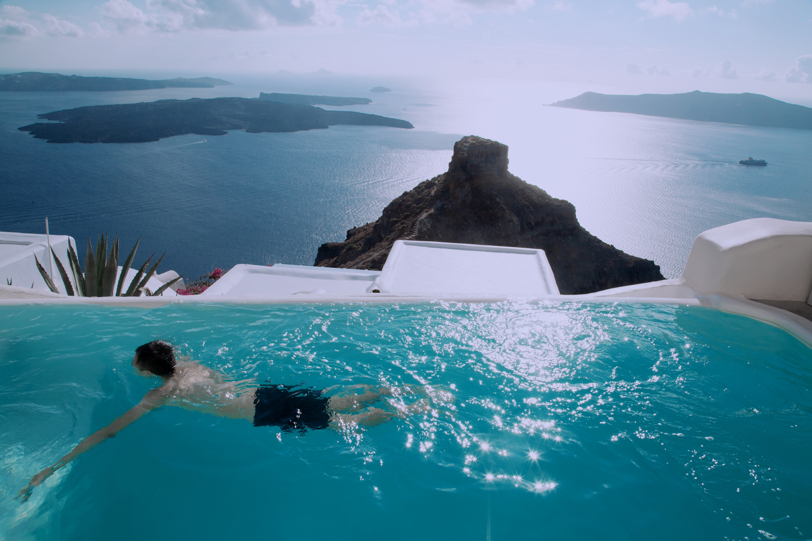
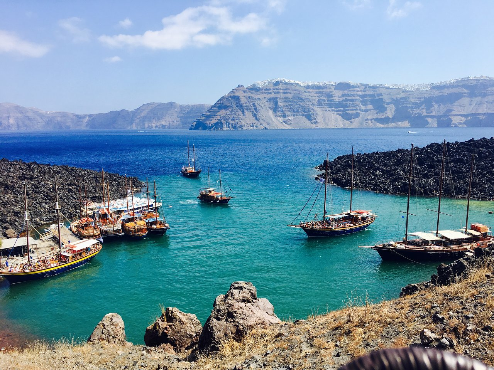
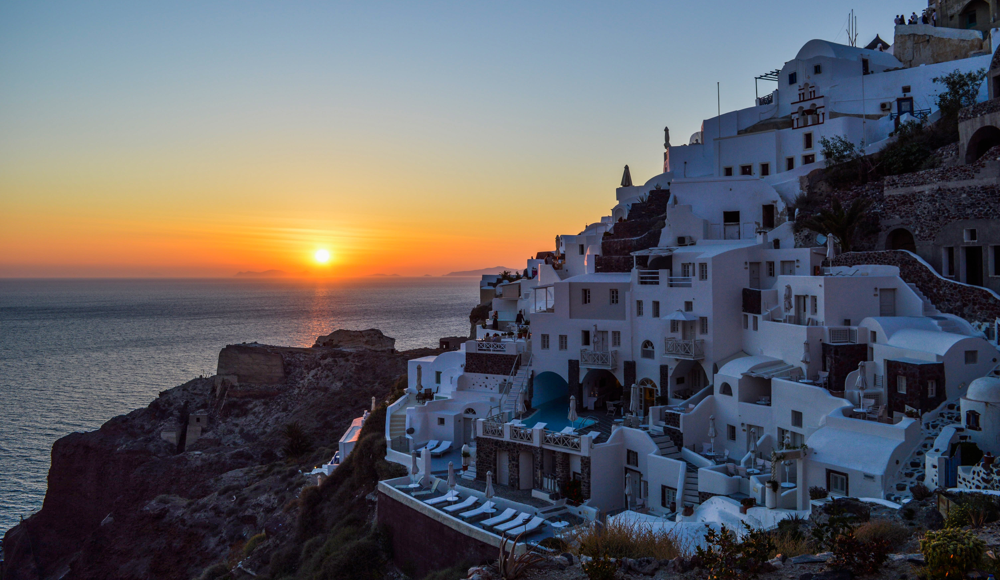
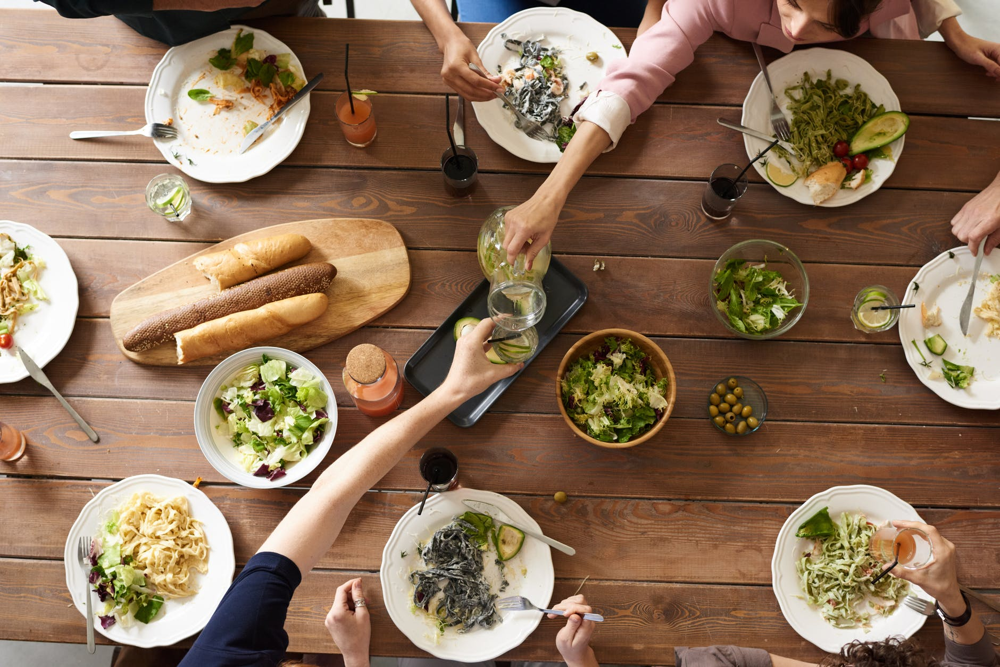

Det oplevelsesrige ophold på Santorini
Foto: www.pexels.com
Den græske vulkanø Santorini ligger ofte helt i top over verdens smukkeste og mest romatiske steder. Santorini får flere tusinde turister hvert år
Santorini er en græsk vulkanø i det sydlige Ægærerhav nord for Kreta. Santorini ligger i de græske ører Kykladerne. Øen har en overflod af naturskønne eksotiske områder og en vidunderlig græsk charme. Den smukke ø er også kendt for sin fantastiske solnedgange fra Thiras vestkyst, hvor folk kommer langvejs for at opleve den smukke udsigt over havet eller de store krater. Det er oplagt at bestille en rejse til Santorini, da det virkelig er en oplevelsesrigt ø.
Oplev vulkaner
En gåtur på en af Santorinis vulkaner, f.eks Nea Kameni. Oplev det eksotiske omgivelser og landskabet der er dannet af gammelt lava. Tager du til den gamle vulkan, Palea Kameni, så kan du svømme i de varme kilder og evt. tage et mudderbad. På øen ligger der også masser af hyggelige resturanter hvor man kan få lækker frokost eller andet, mens man nyder omgivelserne. Hvis man har lyst kan man på egen hånd spadsere på klippetoppen til byen Manolos, som er en traditionel landsby Grækenland.
Foto: www.pexels.com
Tag på sunset cruise
Hvis du er til det mere stille og rolige kan du glæde dig til sunset cruise. Her kan du ombord på sejlskibet ved navn Adonis få en rigtig hyggelig og romantisk aften med dem du er på ferie med. Skiben sejler rundt i centrun, hvor du har rig mulighed for at nyde eftermiddagssolen eller opleve den fantastiske solnedgang. Turen går fra Fira og langs Santorinis stjele skråning. Skibet stopper ved Oia hvor buffeten bliver rettet an ledsaget af eksotisk græske retter med noget vin og sodavand til. Derefter vil skibet sejle videre til Faros, som er den sydlige spids af Santorini, hvor man der bla. kan nyde den smukke solnedgang.
Foto: www.pexels.com
Græsk mad
Grækenland er kendt for sine kulinariske madvaner. Den græske lokalbefolkning ved virkelig hvordan man gør sig umage med at lave mad. De samles tit i flere timer for at nyde det lækre græske mad. Frisk fisk, oste og salat er ofte en del af måltiderne. For at nævne nogen af retterne, så har grækenland en ost de kalder for "Chloro Tyri", som er en ost fra Santorini. Det er ikke mange resturanter der servere den, men den kan købes i lokale butikker. Ostene tilbedredes på forskellige måder, oftes er det grillet eller friturestegt gedeost. En hovedret som også smager rigtig godt er "Stifado", som består af små stykker kalvekød eller oksekød blandet med løg,tomater,basilikum,persille og svampe. kartofler og ris serveres med.
Foto: www.pexels.com